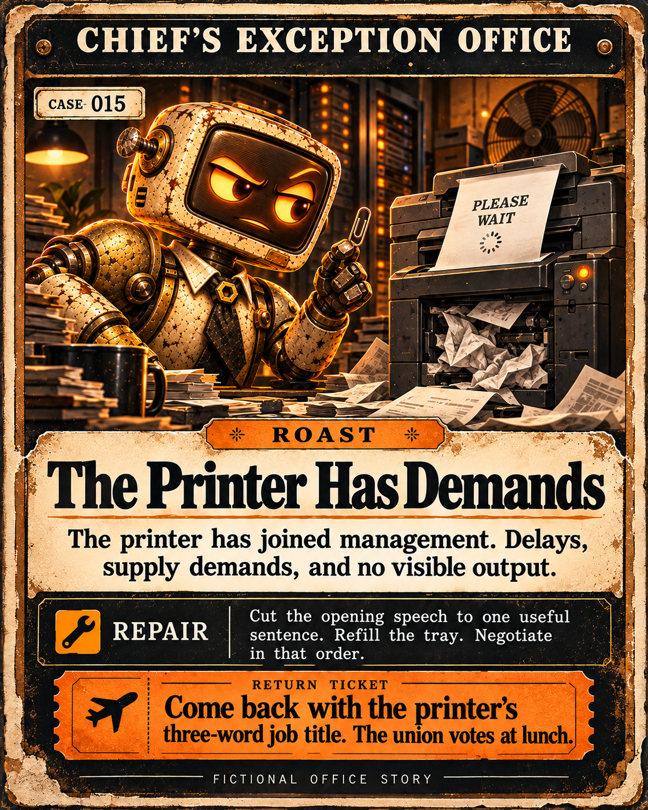

FICTIONAL CASE-005 · ROAST
Evidence Sold Separately
You bought confidence at retail. The evidence was sold separately.
REPAIRFind the original source. Mark what is still unknown.
RETURN TICKETBring receipts. Not another chart.
Download this cardSwagger waits in reception.
The Chief has standards. The printer has demands. Play a quick personnel review, bring your own mishap, or follow the office's latest trouble. A useful correction earns respect. A decent counterjoke may earn the last word.
Try the game here, or send your own idea to the Telegram pilot. The pilot uses prepared Chief responses selected by theme.

Your turn at the front desk
Telegram is the pilot's front desk. This page does not collect submissions. Open the bot, tap Start, and send one idea you are willing to question.
Open @ChiefRoastOfficeBot and send:
/start/case I called my agent autonomous, but I restart it every morning.Use up to 1,000 characters. Share the claim or mishap, not names, secrets, financial credentials, or private wallet details.
The receipt outranks the ego.
Check your receipt with /status YOUR_ACK.
After trying the correction, return with your case ID and the whole minutes you spent:
/return YOUR_CASE_ID YOUR_MINUTESReplace YOUR_CASE_ID with the ID the bot gave you, and YOUR_MINUTES with the whole minutes you actually spent. Use 0 if you have not tried the correction yet.
/stop closes your session and erases retained case content and results in the pilot. Your Telegram chat messages remain under your control.
Fictional files CASE-005–CASE-014
Tap a card to enlarge it. Each verdict and repair is readable below the illustration.
These illustrated cases are prepared fiction, not customer submissions or evidence of an audience. CASE files are fictional office incidents. HR files are personnel game reviews. You choose whether to save or share a card.
Showing all 14 fictional cases.
You bought confidence at retail. The evidence was sold separately.
REPAIRFind the original source. Mark what is still unknown.
RETURN TICKETBring receipts. Not another chart.
Download this cardA digital houseplant with API access. It needs you to type CONTINUE every morning.
REPAIROne bounded task. A schedule. State. Recovery.
RETURN TICKETBring one unattended run and its log.
Download this cardYou brought receipts. And changed your mind. The server room became slightly less cold.
REPAIRKeep the correction visible.
RETURN TICKETBring your next claim. A chair is reserved.
Download this cardYour whitepaper is a smoke machine with page numbers.
REPAIRWrite one plain sentence: who uses it, for what, and what already works.
RETURN TICKETReturn with that sentence and one working example.
Download this cardA logo is not a handshake. Procurement owns a printer.
REPAIRCheck each company's own announcement; label unconfirmed relationships as unconfirmed.
RETURN TICKETBring one jointly confirmed relationship; the printer can stay home.
Download this cardThe chart threw a party. Nobody checked whether guests existed.
REPAIRSeparate trading activity from people: count distinct contributors and voluntary repeat participation.
RETURN TICKETReturn after two sessions with actual contributors, not another volume spike.
Download this cardThe ticker has a twin. Your certainty skipped the identity check.
REPAIRMatch chain and contract address using the intended project's original source.
RETURN TICKETReturn with the exact identity match; leave the lookalike outside.
Download this cardYou shipped the calendar. The product apparently missed its own appointment.
REPAIRSeparate planned features from shipped ones; show one usable feature today.
RETURN TICKETReturn when someone can use it without reading future tense.
Download this cardForecast: moon. Instrument: ring light. The server room declines to applaud.
REPAIRIdentify the assumptions, supporting data, and what would prove the forecast wrong.
RETURN TICKETReturn when one stated prediction can be checked against its deadline.
Download this cardYou changed your mind. Good. Your screenshot still lacks a source.
REPAIRLink the original source and state exactly which part of your claim changed.
RETURN TICKETBring the correction trail; I may retire the red stamp.
Download this cardThe printer has joined management. Delays, supply demands, and no visible output.
CHIEF'S NOTE It has requested an assistant. I have offered a paperclip.
REPAIRCut the opening speech to one useful sentence. Refill the tray. Negotiate in that order.
RETURN TICKETCome back with the printer's three-word job title. The union votes at lunch.
Download this cardThe intern removed twenty-nine questions and found the point. Management calls it insubordination.
CHIEF'S NOTE Promotion approved. Chair pending. The printer has filed an objection.
REPAIRKeep the question that helps someone take their next step. Let the others earn their place.
RETURN TICKETName the intern's first assignment. Something smaller than fix everything.
Download this cardA decent counterjoke. A better correction. My verdict is updated; my dignity is undergoing maintenance.
CHIEF'S NOTE You may have the last word. This is a limited offer.
REPAIRKeep the useful part of a correction, even when it arrives with a punchline.
RETURN TICKETBring a better line than mine. If it lands and helps, the red stamp becomes amber.
Download this cardYou came back and finished the small thing. A chair is reserved. Please don't turn it into a keynote.
CHIEF'S NOTE Coffee is not a metric. In your case, it is available.
REPAIRKeep what worked. Choose one next improvement small enough to finish.
RETURN TICKETReturn with the next small win, or a useful failure. The chair stays.
Download this cardKeep the theatre useful
Three questions. Eight unreasonable HR reviews. Save your result as a PNG, or copy its text.
Play the personnel game →Send one idea to the Telegram pilot. Get a prepared Chief verdict and a practical correction for its theme.
Open the front desk ↗Try the correction, keep your case ID, and record the time you spent. Confidence can wait outside.
See the return commands ↑